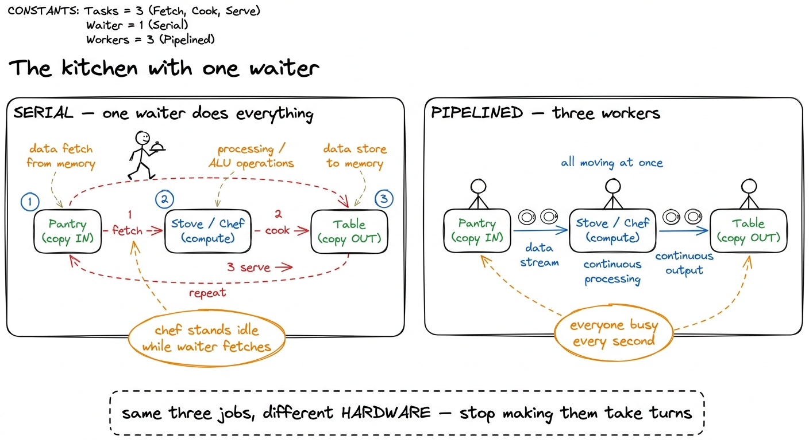
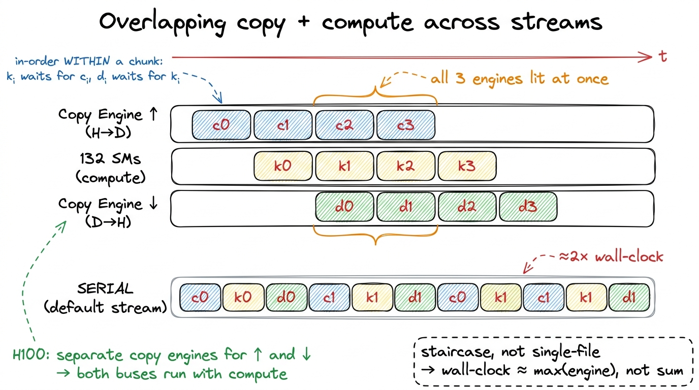
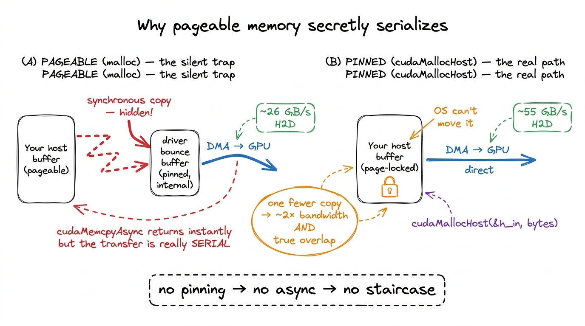
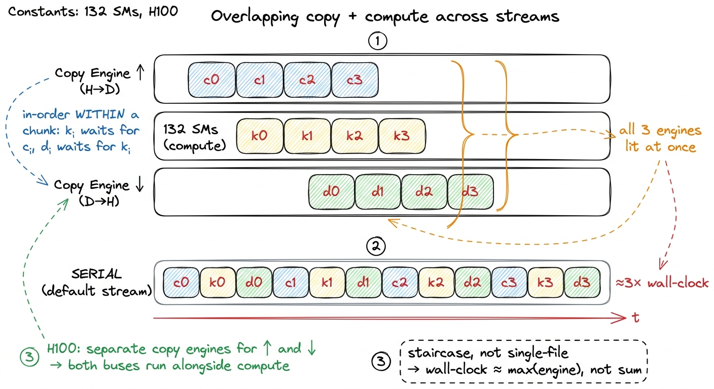
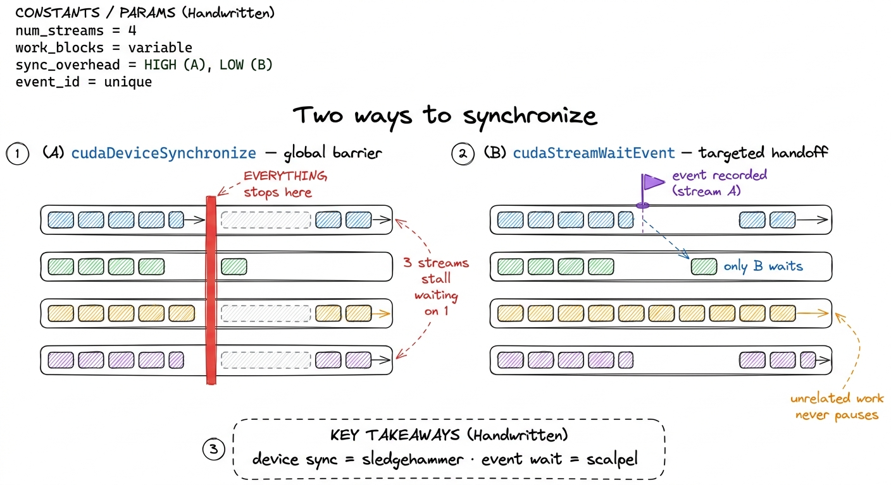
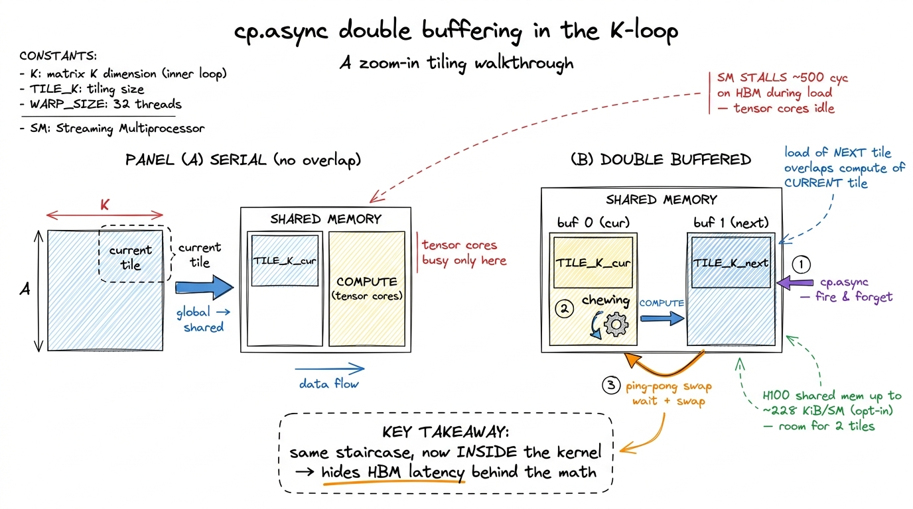

Streams, events & async
Here is a puzzle I want you to hold in your head for the whole article. An H100 can do roughly 989 dense FP16 TFLOP/s on its tensor cores. Its link to the outside world — PCIe 5.0 to the host CPU — moves bytes at about 64 GB/s. Those two numbers are not close. They are not even in the same universe. The math engine is thousands of times faster than the pipe that feeds it. So the moment your program stops the tensor cores to wait for bytes to arrive, you are not wasting a little time. You are idling one of the most expensive silicon on the planet while a garden hose slowly fills a bucket.
This article is about one idea, and only one idea: when one part of the machine is busy, don't let the other parts sit and watch. Find two pieces of work that use different hardware, and run them at the same time instead of one after the other. That is the entire game. Everything below — CUDA streams, pinned memory, events, cp.async, double buffering — is just this single idea applied at different scales.
Let me start from the very bottom, assuming you have written a CUDA program but never thought hard about when things run.
The question: why is my code secretly single-file?
Here is the shape of almost every GPU program a beginner writes. You have some data on the CPU (the "host"). You want the GPU (the "device") to chew on it. So you do three things, in order:
- Copy the input from host memory up to the GPU.
- Launch a kernel that computes on it.
- Copy the result back down to the host.
Written the obvious way, in a loop over many chunks of data, it looks like this:
for (int i = 0; i < num_chunks; ++i) {
cudaMemcpy(d_in, h_in + i*sz, bytes, cudaMemcpyHostToDevice);
process<<<grid, block>>>(d_in, d_out, sz);
cudaMemcpy(h_out + i*sz, d_out, bytes, cudaMemcpyDeviceToHost);
}This is correct. It also runs strictly single-file: copy up, wait; compute, wait; copy down, wait; repeat. Every step politely waits for the one before it to finish. And that is the problem, because those three steps use three different pieces of hardware.
Let me be concrete about what those three pieces are, because it is the crux of everything.
- The two copies are moved by a copy engine — a small, dedicated DMA (Direct Memory Access) unit whose only job is to shovel bytes across the PCIe or NVLink boundary. It is not the compute cores. It is a separate little machine.
- The kernel runs on the Streaming Multiprocessors (SMs) — 132 of them on an H100 — which is where all the arithmetic lives.
So during step 1, the copy engine is working and all 132 SMs are idle. During step 2, the SMs are working and the copy engine is idle. During step 3, the copy engine is working again and the SMs are idle again. At every instant, most of the machine is doing nothing.

figure rendering · The mental model for the whole article: copy-in, compute, copy-out areThat kitchen picture is the mental model I want you to carry the entire way down. Copy-in, compute, and copy-out are three separate workers. The naive loop makes one waiter do all three jobs, walking back and forth. We want three workers, each glued to a station, all busy at once. Hold that image.
Napkin math: how much are we actually leaving on the floor?
Let's make the stakes real with tiny made-up numbers you can follow by hand. Say each chunk of work takes:
- 10 ms to copy up,
- 10 ms to compute,
- 10 ms to copy down.
Serial, per chunk, that is 10 + 10 + 10 = 30 ms. Over 100 chunks, 3000 ms.
Now imagine the three workers overlapping perfectly, like a conveyor belt. Once the belt is full, every 10 ms one chunk finishes copying-down while the next finishes computing while the one after that finishes copying-up. The belt produces one chunk every 10 ms, not every 30. Over 100 chunks (plus a little startup to fill the belt), roughly 1000 ms plus 20 ms of fill ≈ 1020 ms.
That is a ~2.9× speedup — and I changed nothing about the kernel. The FLOPs are identical. The arithmetic is identical. All I did was stop the workers from taking turns.
This is worth pausing on, because it is surprising the first time. We did not make anything faster. We made things happen at the same time. In performance work that distinction is everything, and it is exactly the third of the three regimes — the overhead-and-scheduling regime, where the FLOP/s counter looks fine and the wall clock is still terrible because of the gaps between the useful work.1 In the real world the three phases are almost never perfectly balanced at 10/10/10. If copy dominates (say 20 ms copy, 5 ms compute), the belt runs at the copy rate and overlapping compute buys you almost nothing on that axis — you'd attack the copy instead. The clean ~2-3× only appears when the phases are comparable. Always measure the balance before you assume the win.
So the question becomes: how do I tell the GPU that these operations are allowed to overlap? By default it ran them single-file. What is the switch?
The switch is called a stream.
What a stream actually is
A stream is an ordered queue of work for the GPU. That is the whole definition, and it is worth saying slowly because the entire concurrency model falls out of it.
Two rules:
- Within one stream, operations run in the order you enqueued them, one after another. Strict.
- Across different streams, there is no ordering relationship at all. The hardware is free to run them concurrently, or reorder them, or interleave them however it likes.
That is the complete contract. Same stream = serial. Different streams = free to overlap.
Now here is the thing that explains why your naive code was single-file. When you write plain CUDA and never mention a stream, every operation lands on the default stream (stream 0). You have been putting everything into one queue this whole time. Of course it was serial — there was only ever one line.2 The legacy default stream is also synchronizing: work on it implicitly blocks work on other streams too, unless you compile with --default-stream per-thread, which gives each host thread its own independent default stream. This is a classic trap — people add streams, see zero overlap, and don't realize the default stream in the mix is acting as a global barrier.
Mechanically, the GPU has a small number of hardware queues feeding its work distributor. Each stream you create maps onto one of those queues. If two queues hold work that touches independent parts of the machine — a copy engine moving bytes while the SMs grind on a kernel — the scheduler simply runs both. Nothing clever is required of you. You just have to stop cramming everything into a single queue.

figure rendering · A stream is nothing more than an ordered queue. All concurrency comesPinned memory: the precondition everyone forgets
Before we can overlap anything, there is a precondition that trips up almost everyone the first time, so let's handle it head-on. It has to do with a word: pinned.
Ordinary host memory — anything you got from malloc or new — is pageable. The operating system reserves the right to move those pages around in physical RAM, or even swap them out to disk, whenever it feels like it. That is fine for CPU code. But the GPU's DMA engine reads host memory directly, by physical address, without asking the OS. If the OS moved the page mid-transfer, the DMA would read garbage.
So the driver refuses to let the DMA engine touch pageable memory directly. When you call cudaMemcpyAsync on a pageable buffer, the driver quietly does something else: it copies your data into an internal pinned "bounce buffer" first, synchronously, and only then lets the DMA proceed. The call returns to your code immediately — so it looks async — but under the hood it serialized. Your beautiful stream pipeline does nothing, and you have no idea why.3 This is one of the great silent performance traps in CUDA. cudaMemcpyAsync from pageable memory returns instantly and reports success, but the transfer is really synchronous behind a driver-internal staging copy. People add streams, profile, and see the exact same timeline as before — because the overlap was quietly defeated one layer down.
The fix is to pin (page-lock) the host memory yourself, so the OS promises never to move it. Then the DMA engine can read it directly and the async copy is genuinely async.
float *h_in, *h_out;
cudaMallocHost(&h_in, total_bytes); // page-locked, DMA-able
cudaMallocHost(&h_out, total_bytes);Two things improve at once. First, the transfer becomes a true asynchronous DMA that can overlap with compute — which is the whole point. Second, raw transfer bandwidth climbs noticeably, because the bounce copy is gone and there is one fewer memory copy in the path. On PCIe 5.0 the difference between pinned and pageable H2D bandwidth is routinely something like ~26 GB/s pageable vs ~55 GB/s pinned — roughly double, for free, just from allocating the buffer differently.

figure rendering · Pageable memory forces a hidden synchronous bounce copy through a drivThere is a real cost, and I want to be honest about it: pinned pages cannot be swapped, so you are permanently consuming physical RAM and putting pressure on the OS if you pin gigabytes. Don't pin your entire dataset. Pin the staging buffers of your streaming pipeline — the handful of chunks in flight — and leave the bulk data pageable. That is exactly the right trade.
Overlapping copy and compute, for real
Now we have the two pieces: streams to express "these may overlap," and pinned memory so the copies are truly async. Let's build the pipeline.
The idea is to create a handful of streams and round-robin our chunks across them. While stream 0 is running its kernel, stream 1 can be copying the next chunk up, and stream 2 can be copying a previous result down. Three engines, three jobs, all at once.
const int NS = 3;
cudaStream_t s[NS];
for (int i = 0; i < NS; ++i) cudaStreamCreate(&s[i]);
for (int i = 0; i < num_chunks; ++i) {
cudaStream_t st = s[i % NS];
cudaMemcpyAsync(d_in[i%NS], h_in + i*sz, bytes,
cudaMemcpyHostToDevice, st);
process<<<grid, block, 0, st>>>(d_in[i%NS], d_out[i%NS], sz);
cudaMemcpyAsync(h_out + i*sz, d_out[i%NS], bytes,
cudaMemcpyDeviceToHost, st);
}
cudaDeviceSynchronize();Read what the ordering guarantees give us. Within each stream, order is still sacred: a chunk's kernel will not start until that chunk's upload finishes, and its download will not start until its kernel finishes. Correctness is preserved automatically — you never get a kernel reading half-copied data. What we removed is the cross-chunk serialization. Chunk i+1's upload no longer has to wait for chunk i's download. The queues are independent, so the scheduler overlaps them.
The result is a staircase. Let me draw it, because this picture is the payoff of the whole first half of the article.

figure rendering · The staircase. Once the pipeline fills, upload, compute, and downloadNotice the shape. In the steady state — the middle of the staircase — all three lanes have a block in the same column. That column is the moment all three workers are busy. The serial lane at the bottom is the same blocks laid single-file, and it is visibly two-to-three times longer. That length difference is your speedup, drawn to scale.
One subtlety trips up first attempts, so let me name it. The order in which you issue the calls from the host can matter. The loop above is "depth-first": all three calls for chunk 0, then all three for chunk 1, and so on. On some driver and hardware combinations, depth-first issue creates false dependencies that fill the hardware queues in a way that serializes more than a "breadth-first" issue (all uploads first, then all kernels, then all downloads). On Hopper's scheduler the depth-first loop usually overlaps fine, but if you profile and see gaps where you expected overlap, restructuring the issue order into breadth-first is the very first thing to try.4 The reason issue order matters at all is that older GPUs had a limited number of hardware queues, and CUDA multiplexed many streams onto them. Two operations from different streams could land in the same hardware queue and pick up a false dependency. Hopper has far more queues and this is mostly a non-issue now, but "mostly" is why it's still the first knob to check when overlap doesn't appear.
Events: you cannot claim a speedup you did not measure
I said this loop is ~3× faster. How would I prove it? Here is where beginners reach for the wrong tool. The obvious instinct is to wrap the loop in a CPU timer:
auto t0 = std::chrono::high_resolution_clock::now();
// ... the streamed loop ...
auto t1 = std::chrono::high_resolution_clock::now();This measures the wrong thing. Every call in that loop is asynchronous — cudaMemcpyAsync and the kernel launch both return to the host immediately, long before the GPU has done any work. So your CPU timer mostly measures how fast the host could fire off launch commands, plus driver overhead. It does not measure the GPU doing the work. You will get a number, and it will be meaningless.
The right tool is a CUDA event — a lightweight marker you drop into a stream that the GPU timestamps, on its own clock, at the moment it reaches that point in the queue.
cudaEvent_t start, stop;
cudaEventCreate(&start);
cudaEventCreate(&stop);
cudaEventRecord(start, 0);
// ... enqueue the whole streamed pipeline ...
cudaEventRecord(stop, 0);
cudaEventSynchronize(stop); // block host until GPU reaches `stop`
float ms = 0;
cudaEventElapsedTime(&ms, start, stop); // GPU-clock millisecondscudaEventElapsedTime gives you the time the GPU spent between the two markers, on the GPU's own clock, at roughly microsecond resolution. That is exactly what you want.5 Event timing is device-side and reflects when the GPU actually reached each marker in its queue — far more trustworthy than a host-side std::chrono timer, which for async launches mostly measures launch latency and driver overhead, not the kernel. If you must use a host timer, you have to cudaDeviceSynchronize() right before stopping it, which throws away the overlap you were trying to measure.
Events pull double duty, and the second job is beautiful. An event recorded on one stream can be waited on by another stream via cudaStreamWaitEvent. That lets you express a dependency across two streams — "stream B, don't start until the thing I marked in stream A is done" — without a full cudaDeviceSynchronize that would stall the entire device. A producer stream signals, a consumer stream waits, and every other unrelated stream keeps flowing. It is a fine-grained handoff instead of a global stop-the-world barrier.

figure rendering · An event lets one stream wait on exactly one point in another. It is aNow run both versions and read the truth off an Nsight Systems (nsys) timeline. The serial version shows the H2D, kernel, and D2H rows lit one at a time in strict succession — you can see the taking-turns with your own eyes. The streamed version shows all three rows overlapping in the steady state: the staircase, made visible in a real profiler. A well-balanced streamed pipeline lands close to the larger of "total transfer time" and "total compute time" instead of their sum. For a workload split evenly between the bus and the SMs, that is a measured ~1.8–2× speedup in wall-clock time in practice (the ideal ~3× erodes to ~2× once you account for pipeline fill/drain and imperfect balance), achieved without touching a single line of the kernel. The tensor cores were always fast enough. I was just starving them.
The same idea, one level down: inside a single kernel
Everything so far overlapped work across kernel launches, orchestrated from the host. Now comes the part I find genuinely elegant: the exact same idea, applied inside a single kernel, is one of the most important optimizations in all of GPU computing. It is the reason the top of the GEMM ladder exists.
Let me set up the situation from scratch, in case you haven't done a tiled matrix multiply. In a shared-memory GEMM, each thread block is responsible for one output tile of C. To compute it, the block marches along the shared K dimension in steps. For each step it does two phases:
- Load: copy a small slab of
Aand a small slab ofBfrom slow global memory (HBM) into fast on-chip shared memory. - Compute: do a burst of multiply-accumulate on the slab now sitting in shared memory.
Written naively, those two phases are serial — and now you should hear an alarm, because serial copy-then-compute is exactly the problem we just solved at the host level. The SM issues the loads, then stalls, waiting hundreds of cycles for HBM to deliver the bytes, and only then runs the math. During that stall the compute pipes are idle. It is the copy-then-compute problem all over again, just shrunk down: the granularity is a __syncthreads() instead of a cudaMemcpy, and the "bus" is the HBM link instead of PCIe, but it is the same disease.
How slow is that stall, concretely? HBM latency is on the order of 400–600 cycles. If the block does, say, a few dozen cycles of math per tile and then waits 500 cycles for the next tile's data, the SM spends the overwhelming majority of its time waiting, not computing. The tensor cores — the crown jewels — sit idle behind a memory stall. That is the autotuned kernel at 84.8% of cuBLAS still leaving performance on the table: it stalls on HBM inside its K-loop, and hiding that stall is what the next rung buys.
Zooming in: cp.async and the double buffer
Pre-Hopper, the standard way to hide that stall was to rely on occupancy — pack enough independent warps onto the SM that whenever one warp stalls on memory, the warp scheduler has another ready warp to run. That works, but it costs you registers and shared memory to keep all those warps resident, and it doesn't help if a single warp needs its own data now.
Hopper (and Ampere before it) gives us something more direct: asynchronous copy — cp.async at the PTX level, exposed as cuda::memcpy_async in the C++ API. It does two remarkable things.
First, it copies straight from global memory into shared memory, bypassing the register file entirely. Normally a load goes global → register → shared, occupying registers and issuing extra instructions the whole way. cp.async goes global → shared directly, freeing the registers and deleting those instructions.6 This register-file bypass is a second, quieter win on top of the overlap. Fewer registers per thread means you can fit more warps on the SM (higher occupancy), and the deleted load-into-register instructions reduce instruction-issue pressure. So cp.async helps even in code that isn't explicitly double-buffered.
Second — and this is the point — it is asynchronous. The instruction that fires the copy does not block the thread. You launch the load and keep executing. You only wait for it later, at the exact moment you actually need the data.
That "wait later" is the hinge that lets us build a pipeline inside the kernel. Here is the move: while I compute on the tile I already have, I fire off the async load for the tile I will need next. When I finish computing, the next tile's data has been streaming in the whole time, and it's ready (or nearly so). I never stall, because the load and the math ran on top of each other.
// pseudo-C++ for the inner K-loop
cp_async(smemA[next], gmemA + next_tile); // fire-and-forget load of NEXT tile
cp_async(smemB[next], gmemB + next_tile);
compute_tile(smemA[cur], smemB[cur]); // math on the CURRENT tile
cp_async_wait(); // NOW block on the load
__syncthreads();
swap(cur, next); // ping-pong the buffersThat swap is the whole trick, and it has a name: double buffering. You keep two tiles in shared memory. One is being computed on (cur), the other is being filled by the async load (next). Each iteration you ping-pong: the buffer you just filled becomes the one you compute on, and the one you just finished computing becomes the target for the next load. Neither the memory system nor the math pipes is ever idle waiting for the other.
Look at what this is. It is the exact streamed pipeline from the first half of this article, transplanted from the host loop into the kernel's inner loop. cp.async plays the role of cudaMemcpyAsync. The two shared-memory buffers play the role of the round-robin over streams. The staircase is the same staircase — just now every step is a K-tile instead of a data chunk.

figure rendering · Double buffering is the streamed pipeline moved into the inner loop. cDoes the double buffer fit? Let's check with real numbers, because "hold two tiles" is only free if there's room. The H100's unified L1/shared block is 256 KiB per SM, of which the driver lets a kernel opt into about 227 KiB as shared memory.7 The unified L1/shared block on H100 is 256 KiB per SM; a kernel opts into up to ~227 KiB of it as shared memory via cudaFuncAttributeMaxDynamicSharedMemorySize. So the round headline figure "228 KiB" is the opt-in ceiling, not an exact usable limit, and the rest stays as L1 cache. A typical FP16 GEMM tile of, say, 128×64 elements is 128 × 64 × 2 bytes = 16 KiB, and you need one for A and one for B, so ~32 KiB per buffer. Two buffers (double-buffered A and B) is ~64 KiB. Comfortably inside 227 KiB — you could even triple- or quadruple-buffer if the pipeline depth wanted it. The shared memory was sized generously precisely so you can keep several tiles in flight and never stall.
The frontier: from cp.async to TMA and warp specialization
I'll go one step past the classic double buffer, because it's where production kernels actually live in 2025.
cp.async still asks every thread to participate in computing addresses and issuing copies. Hopper adds the Tensor Memory Accelerator (TMA) — a dedicated hardware unit that, given a single descriptor, copies an entire multidimensional tile from global to shared memory by itself, freeing all the threads to do math. One thread fires the whole tile copy; the TMA engine handles the addressing. It's cp.async taken to its logical end: the copy becomes a true background operation with its own hardware, the same way the host-side copy engine is separate silicon from the SMs. (The Hopper TMA article goes deep on this.)
And the deepest version of the idea is warp specialization: dedicate some warps in the block to be "producers" that do nothing but fire TMA loads, and other warps to be "consumers" that do nothing but the tensor-core math, with a shared-memory buffer and a barrier between them. That is the kitchen figure, made literal in silicon — a fetch worker and a cook worker, each glued to their station, handing plates across a counter. This is exactly how FlashAttention-3 and the fastest cuBLAS/CUTLASS GEMM kernels on H100 are built, and it is how DeepSeek's open-source DeepGEMM keeps the tensor cores fed. Every one of them is the same single idea we started with: when one worker is busy, don't let the others watch.
Where this lands us
Streams, pinned memory, events, cp.async, double buffering, TMA, warp specialization — I want you to see them as one idea wearing seven costumes:
Find two pieces of work that use different parts of the machine, and stop making them wait for each other.
At the host level that idea is copy-versus-compute overlap. It's worth a clean ~2× on any transfer-bound pipeline, it requires zero kernel changes, and its non-negotiable precondition is pinned memory. At the kernel level the same idea is double buffering, and it is one of the last rungs that carries a GEMM from the mid-80s into the low-90s percent of cuBLAS, because it hides the HBM stall behind the tensor-core math.
The one picture to keep is the staircase. Whenever you look at a kernel or a pipeline and see one engine busy while another sits idle, ask the reflex question: could the idle engine be doing the next iteration's work right now? On a Hopper GPU the hardware has been built, deliberately, to let you say yes — dedicated copy engines outside the kernel, and cp.async, TMA, and ~228 KiB of shared memory per SM inside it.
Next we turn this three-line sketch into a real ping-pong GEMM kernel and profile the stall we just claimed we removed, in double buffering with cp.async. That's where the mental model earns its keep.